{kind=link}
0-6 s
Dans une station-service, une partie de l'essence stockee s'evapore naturellement. Ces vapeurs sont polluantes, dangereuses, et representent une perte directe pour l'exploitant.
L'animation montre comment l'ECO-RENTABLE capte les vapeurs d'essence, les condense, puis renvoie le carburant liquide dans la cuve. Le message est volontairement simple : moins de pertes, moins d'emissions, plus de marge.

Le texte ci-dessous peut etre lu tel quel sur l'animation, ou servir de base pour un montage video avec musique sobre et titrage.
Dans une station-service, une partie de l'essence stockee s'evapore naturellement. Ces vapeurs sont polluantes, dangereuses, et representent une perte directe pour l'exploitant.
L'ECO-RENTABLE se connecte aux events existants de la cuve. Des capteurs suivent la pression et declenchent automatiquement le traitement au bon moment.
Les vapeurs sont aspirees vers la machine dans un circuit ferme. Elles ne partent plus dans l'atmosphere : elles deviennent une matiere premiere recuperable.
Dans le condenseur frigorifique, les vapeurs refroidissent et redeviennent liquide. Le carburant recupere retourne directement dans la cuve.
Chaque litre recupere est mesure par l'application connectee : volumes, pression, temperature et historique sont visibles en temps reel.
Resultat : moins d'emissions de COV, moins de pertes, et une nouvelle source de revenus pour la station, sans investissement initial.
La vapeur n'est pas seulement captee : elle est transformee en carburant liquide et renvoyee dans la cuve.
Les volumes recuperes sont suivis par application, ce qui rend le partage des revenus transparent pour HCTECH et la station.
Le modele revenue share transforme une contrainte environnementale en revenu additionnel, avec une installation non intrusive.
Le SVG est autonome : il garde ses animations quand il est ouvert seul dans un navigateur ou integre dans une page web.
Voir l'animation pleine page Retour au business plan